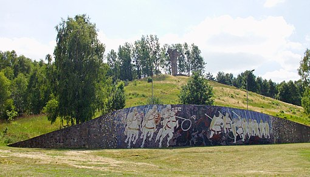

Bitwa pod Cedynią
Bitwa pod Cedynią odbyła się 24 czerwca 972 między wojskami księcia Polan Mieszka I a margrabiego Marchii Łużyckiej Hodona, wspomaganego przez możnowładcę Zygfryda von Walbeck. Wyprawa była prywatnym przedsięwzięciem możnowładców niemieckich, niezgodnym z wcześniejszymi traktatami Mieszka I z Ottonem I. Bitwa stanowiła jedyny większy epizod najazdu Hodona na Pomorze Zachodnie opanowane kilka lat wcześniej przez Polan.
 Informacja o bitwie zachowała się dzięki Kronice Thietmara (1012–1018). Brak jest pewności co do lokalizacji samej bitwy, bowiem jedyne co o niej wiadomo, to zawarta w kronice nazwa miejscowości podana w łacińskiej transkrypcji jako Cidini. W XVIII wieku ksiądz Adam Tadeusz Naruszewicz w swojej „Historii narodu polskiego” identyfikował Cidini z obecnym Szczecinem. Wielu historyków lokalizowało miejsce bitwy na lewym brzegu Odry, utożsamiając Cidini z Zehdenick albo z Zeuthen. Jednak stanowcza większość obecnych badaczy wskazuje na jej miejsce Cedynię.
Koncepcje przebiegu bitwy na podstawie badań topografii, uzbrojenia i taktyki wojskowej wczesnego średniowiecza oraz najnowszej analizy źródeł historycznych, przedstawiają bardziej szczegółowo rozwój hipotetycznych wydarzeń. Jedna z tego rodzaju hipotez głosi, że siły obu stron były zapewne wyrównane (nie przekraczały paru tysięcy), aczkolwiek Hodo miał zapewne więcej ciężkiej konnicy. Uważa się, że mógł zgromadzić nie więcej niż 1000–1300 konnych rycerzy. Na tę siłę składały się wojska zebrane w jego własnej marchii, oddziały Zygfryda von Walbeck oraz rzesze różnych pospolitych awanturników spragnionych łupów i sławy. Ponadto margrabia prowadził około 3000 pieszych, głównie oddziały słowiańskie. Silną stroną Mieszka byli natomiast łucznicy i ruchliwa piechota dobrze przygotowana do walki na nierównym terenie.
Źródło: Wikipedia (https://pl.wikipedia.org/wiki/Bitwa_pod_Cedyni%C4%85)